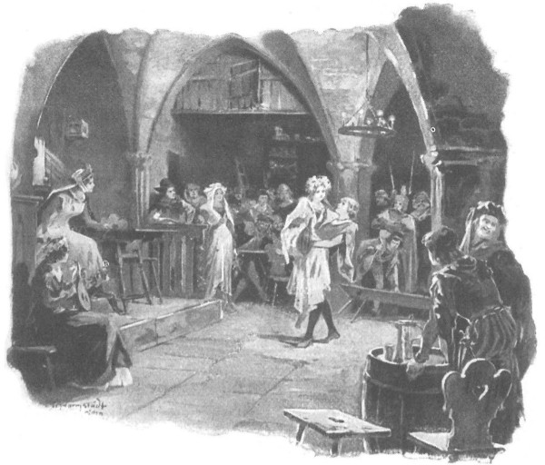
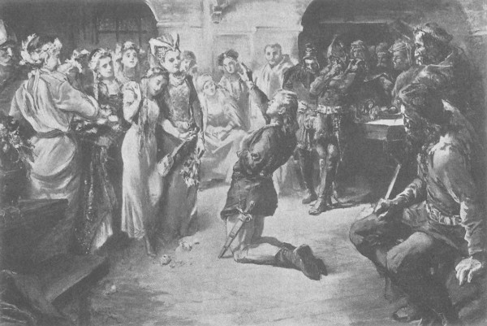

Vừa lúc ấy, quận chúa bước vào. Bà trạc trung tuần, nét mặt tươi cười, khoác áo choàng đỏ bên ngoài chiếc áo dài màu lục bó sát người, có một dải vàng ở hông, chạy dọc theo thắt lưng, với một móc khóa lớn cài bên dưới. Theo sau quận chúa là các thị nữ, một số đã già, một số còn rất trẻ, đầu đội những vòng hoa nhỏ màu hồng và tím, phần đông đều cầm đàn luýt. Có người mang những cành hoa tươi, hẳn vừa hái dọc đường. Căn phòng đông hẳn lên, vì tiếp sau đám thị nữ xuất hiện mấy vị đình thần và vài tiểu thị đồng. Bước vào quán, ai nấy đều tỉnh táo, nét mặt tươi vui, trò chuyện ồn ào hoặc ngâm nga khe khẽ, dường như đều say sưa cái đêm đẹp trời với ánh trăng sáng tỏ. Trong đám đình thần có hai ca công, một người cầm đàn luýt, người kia đeo chiếc đàn gęśle [50] nhỏ ở thắt lưng. Một thiếu nữ còn rất trẻ, mới chừng mười hai tuổi, bưng một chiếc đàn luýt nhỏ xinh đóng đinh đồng, theo sát sau quận chúa.
- Sáng danh Chúa Giêsu Ki-tô! - Quận chúa đứng giữa phòng, cất tiếng cầu nguyện.
- Đời đời, amen! - Những người có mặt vừa đồng thanh đáp lại vừa cúi rạp xuống chào bà.
- Chủ quán đâu rồi?
Nghe tiếng gọi, lão chủ quán già người Đức tiến lên phía trước, quỳ xuống theo phong tục Đức.
- Chúng ta dừng chân lại quán đây để nghỉ ngơi ăn uống. - Quận chúa phán. - Hãy dọn bàn nhanh, chúng ta đói cả rồi.
Mấy người khách thương đã lánh mặt, còn lại hai trang chủ quý tộc bản địa với ông Maćko trang Bogdaniec và Zbyszko; họ cúi chào lần nữa và định rời khỏi phòng vì không muốn quấy rầy quận chúa cùng đoàn tùy tùng.
Nhưng quận chúa ngăn họ lại.
- Các ngươi đều là quý tộc, chẳng làm phiền gì ai. Các ngươi hãy làm quen với đình thần của ta. Đức Chúa đưa các ngươi từ đâu đến đây vậy?
Họ lần lượt xưng danh tính, gia huy, chiến lệnh và quê hương bản quán của mình. Khi nghe ông Maćko nói tên nơi ông vừa rời chân trở về, quận chúa liền vỗ tay thốt lên:
- Thật không hẹn mà gặp! Các ngươi hãy kể cho ta nghe về thành Wilno, về huynh trưởng ta xem nào. Đại quận công Witold có về đây mừng hoàng hậu sinh hạ và dự lễ rửa tội không?
- Thưa, đại quận công những muốn thế, nhưng chưa chắc ngài đã về được. Vì vậy, ngài đã nhờ các tu sĩ và hiệp sĩ quý tộc mang hộ chiếc nôi bằng bạc về trước dâng mừng hoàng hậu. Tôi và đứa cháu đây cũng được phái cùng đi để bảo vệ chiếc nôi ấy dọc đường đấy ạ.
- Cái nôi ấy có đây không? Ta muốn xem. Nó bằng bạc ròng ư?
- Bằng bạc ròng đấy ạ. Nhưng hiện không có đây. Người ta đã chở nôi về thành Kraków rồi ạ.
- Thế các ngươi làm gì ở Tyniec?
- Chúng tôi đến đây gặp ngài quản lý đan viện, một kẻ họ hàng thân thuộc, để giao phó cho các đan sĩ đức hạnh coi giữ hộ những gì chiến chinh đã mang lại cho chúng tôi, cùng những gì đại quận công đã ban thưởng.
- Chính Đức Chúa ban phúc đấy. Chiến lợi phẩm đáng giá chứ? Nhưng các ngươi hãy nói ta nghe vì sao ngài không chắc về dự hội được?
- Thưa, bởi đại quận công đang sửa soạn tiến binh đánh bọn rợ Tatar.
- Ta cũng biết vậy, song chỉ lo một điều là hoàng hậu anh minh đã không tiên báo thắng lợi của cuộc hành binh này, mà những điều hoàng hậu tiên đoán bao giờ cũng trở thành hiện thực.
Ông Maćko mỉm cười:
- Hoàng hậu anh minh thần võ, thật khó lòng bác bỏ được điều ấy. Nhưng có rất nhiều hiệp sĩ của chúng ta cũng cùng lên đường với đại quận công Witold, họ là những trang thanh tráng niên giỏi giang muôn người khôn địch.
- Thế sao các ngươi không tham gia?
- Tôi được phái cùng những người khác hộ tống chiếc nôi về đây. Vả đã năm năm trời nay, chúng tôi chưa hề cởi giáp phục ra khỏi người. - Ông Maćko vừa trả lời vừa đưa tay chỉ những vệt hằn ngang dọc trên tấm áo bằng da hươu mà giáp phục đã ghi vết - Nghỉ ngơi chút đỉnh rồi chúng tôi sẽ lại ra đi, mà nếu đích thân không đi được, tôi sẽ xin phó thác đứa cháu trai Zbyszko đây cho tướng công Spytko xứ Melsztyn, người thống lĩnh tất thảy hiệp sĩ xứ ta lên đường tham chiến.
Quận chúa Danuta đưa mắt ngắm thân hình tráng kiện của Zbyszko, song cuộc trò chuyện bị gián đoạn tại đó, bởi chợt có một đan sĩ từ đan viện bước vào quán. Sau khi chào quận chúa, ông ta rụt rè ngỏ ý trách bà đã không phái điệp sứ báo tin ngự giá và đã không dừng chân nghỉ trong đan viện mà ghé vào một tửu điếm bình dân, không xứng với nghi vệ của bà. Đan viện đây thiếu gì nhà lớn nhỏ, đến kẻ tiện dân cũng tìm được chỗ nghỉ chân, huống hồ đến một bậc tôn quý, nhất là phu nhân của vị quận công đã từng có nhiều tổ tiên và họ hàng góp bao công đức cho đan viện đây.
Quận chúa vui vẻ đáp:
- Chúng ta vào đây chỉ cốt nghỉ chân một chút thôi, sáng mai phải về đến Kraków rồi. Ban ngày chúng ta đã ngủ đẫy giấc để đêm đến đi cho mát mẻ. Mà gà đã gáy [51] , ta không muốn làm mất giấc ngủ của các đan sĩ mộ đạo, nhất là khi ta mang theo cả một đoàn tùy tùng đông đúc, chỉ những nghĩ đến chuyện hát ca nhảy múa hơn chuyện nghỉ ngơi.
Nhưng thấy đan sĩ cứ nài nỉ không thôi, quận chúa bèn nói thêm:
- Thôi. Ta đã dừng chân ở quán đây rồi. Giờ là lúc thích hợp để nghe những bài ca dân dã, sáng ra ta sẽ vào thánh đường dự buổi lẽ sáng để được cùng Đức Chúa mở đầu một ngày mới.
- Dạ, đó sẽ là lễ misa cầu xin ơn phước cho quận công tôn kính và quận chúa kính yêu. - Đan sĩ nói.
- Quận công phu quân ta phải bốn, năm ngày nữa mới tới kia.
- Ngay từ xa, Đức Chúa vẫn có thể ban ơn lành được, thưa quận chúa. Còn bây giờ, xin lệnh bà cho phép chúng thần, những kẻ tu hành nghèo khó, được mang chút ít rượu nho từ bên đan viện đến đây kính dâng người.
- Chúng ta sẽ rất hân hạnh đón nhân. - Quận chúa phán.
Khi vị đan sĩ đã bước ra, quận chúa gọi to:
- Nào, Danusia! Danusia! Con hãy bước lên ghế và hãy làm cho trái tim chúng ta vui sướng bằng bài ca mà con đã từng hát ở thành Zator đi nào!
Nghe lệnh, đám cung nhân bèn nhanh nhẹn đặt một chiếc ghế dài chính giữa gian nhà. Các ca công tiến lên ngồi hai bên ghế, đứng ở giữa là cô gái nhỏ cầm chiếc đàn luýt xinh xinh tán đinh đồng vừa bước theo sau quận chúa. Đầu nàng đội một vòng hoa nhỏ, tóc buông xõa xuống vai, nàng mặc chiếc áo váy dài màu thanh thiên, chân mang đôi hài đỏ chót, mũi nhọn hoắt. Đứng trên ghế dài, nom nàng như một bé gái - một bé gái xinh xẻo tuyệt vời, hay như một pho tượng nhỏ trong nhà thờ, một hình nhân xinh xắn trong hoạt cảnh mô tả ngày Đức Chúa giáng sinh. Hẳn đây không phải lần đầu nàng được đứng như thế để hát hầu quận chúa, bởi trông nàng chẳng hề bối rối chút nào.
- Hát đi, Danusia! Hát đi! - Đám thị nữ giục.
Cô gái nâng đàn luýt trước mặt, ngẩng đầu lên như một chú chim sắp cất tiếng hót, rồi hơi nheo nheo đôi mắt bé xinh, nàng hát lên bằng giọng lanh lảnh trong như tiếng bạc:
♫ Ước gì có cánh như chim, ♫
♫ Để băng sông núi đi tìm, chàng ơi! ♫
Các ca công hòa đàn theo giọng nàng, một người gảy đàn gęśle người kia gảy chiếc đàn luýt lớn. Vốn say mê những khúc ca dân đã hơn mọi thứ trên đời, quận chúa ngồi nghe hát, đầu lắc lư sang hai bên. Cô gái hát tiếp bằng giọng thanh mảnh, trẻ thơ, tươi mát như tiếng chim lảnh lót chào xuân giữa chốn sơn lâm:
♫ Đậu lên cành nhỏ bên người, ♫
♫ Thưa rằng: “Đây gái mồ côi phận nghèo.” ♫
Các ca công lại hòa theo nàng. Chàng trẻ tuổi Zbyszko trang Bogdaniec từ thuở thiếu thời vốn chỉ quen với những nghiệt ngã của chiến chinh, trong đời chưa bao giờ được thấy cảnh tượng mê ly dường kia, chàng khẽ chạm vào vai một người đàn ông xứ Mazury đứng cạnh mà hỏi:
- Đó là ai vậy, thưa ngài?
- Đó là thị nữ trong dinh quận chúa chúng tôi. Chẳng thiếu gì ca công làm vui chốn cung đình, nhưng cô gái này là người đáng yêu hơn cả. Quận chúa mê tiếng hát của cô ấy nhất.
- Cũng chẳng có gì là lạ. Tôi cứ ngỡ là tiên đồng thiên giới, chẳng thể nào rời mắt khỏi nàng. Tên nàng là gì, thưa ngài?
- Anh không nghe người ta gọi đấy sao? Danusia! Thân sinh cô ấy chính là quý ngài Jurand trang Spychow giàu có và can trường, một hiệp sĩ thuộc quân tiền đạo tiên phong.
- Hey! Thế gian chưa từng gặp một thiếu nữ nào như nàng!
- Ai cũng yêu mến cô ấy, cả vì giọng hát lẫn nhan sắc.
- Thế ai là hiệp sĩ của nàng?
- Ô, Danusia hẵng còn là con trẻ ấy mà.
Tiếng hát Danusia cất lên làm gián đoạn cuộc trò chuyện. Đứng một bên, Zbyszko đưa mắt mê mải ngắm nhìn nàng - làn tóc sáng màu, dáng đầu ngẩng cao, đôi mắt nheo nheo, và toàn bộ thân hình vừa được ánh nến bập bùng soi tỏ vừa quyện trong ánh trăng đang tràn vào phòng qua những ô cửa sổ rộng mở. Và mỗi lúc, chàng trai càng thêm bàng hoàng thảng thốt Chàng ngỡ như đã từng gặp cô gái ấy từ hồi xưa, không rõ trong mơ hay trong một bức tranh thánh nào đó vẽ trên kính nhà thờ tại thành Kraków.
Chàng lại chạm vai người đình thần đứng bên và hạ giọng hỏi tiếp:
- Thế ra nàng thuộc triều đình của các vị đấy ư?
- Mẫu thân cô ấy là người cùng tháp tùng quận chúa Danuta từ Litva tới đây, bà được quận chúa gả cho quý ngài Jurand trang Spychow. Bà là người rất xinh đẹp, dòng dõi phong lưu, được quận chúa yêu quý nhất trong đám cung nữ. Chính bà cũng yêu thương quận chúa hết lòng. Vì vậy, bà lấy tên quận chúa Anna Danuta đặt cho con gái yêu của mình. Nhưng năm năm trước đây, khi bọn Đức đột ngột tráo trở tấn công chúng tôi ở thành Zlotoryja [52] thì bà qua đời vì quá kinh sợ. Quận chúa bèn đón cô gái về cung nuôi nấng từ bấy đến nay. Phụ thân cô ấy cũng rất hay lui tới dinh quận chúa, ngài sung sướng khi thấy con gái lớn lên khỏe mạnh, được cưu mang chăm bẵm trong tình yêu thương của quận chúa. Bao lần ngắm con, bấy lần ngài nhỏ lệ chan chứa nhớ đến người vợ hiền bạc phận, để rồi sau đó, ngài lại trút hết nỗi căm hờn lên đầu giặc Đức cốt rửa món thù hận khủng khiếp kia. Ngài rất thương yêu vợ, chưa có ai trên khắp miền Mazowsze yêu thương vợ con đến thế, chính tay ngài cũng đã từng giết không biết bao nhiêu tên giặc Đức để trả thù cho bà.
Mắt Zbyszko đột nhiên sáng bừng lên, mạch máu chàng nổi hằn trên thái dương.
- Thế ra chính lũ giặc Đức đã hạ sát mẫu thân nàng sao?
- Đích tay chúng giết thì không. Bà ấy chết vì quá kinh hoàng. Năm năm trước đây vẫn là thời yên bình, nào ai nghĩ gì đến chuyện chiến chinh, đi lại vẫn an toàn như thường. Hồi ấy quận công rời Mazowsze để đi xây tháp ở thành Zlotoryja, không mang quân đội theo, chỉ có đám tùy tùng như trong thời bình mà thôi. Đúng lúc ấy bọn Đức trở mặt tấn công triều đình chúng tôi, chẳng hề tuyên chiến, cũng chẳng có nguyên do gì hết.. Chúng không sợ Chúa, cũng không nhớ rằng chính nhờ các bậc tổ tiên của quận công mà chúng mới được hưởng bấy nhiêu điều phúc phận [53] . Chúng bắt ngài, trói lên ngựa đem đi, lại còn tàn sát những người theo hầu. Quận công đã phải chịu cảnh lưu đày tù ngục ở bên đất chúng rất lâu, mãi đến khi đức vua Władysław dọa tuyên chiến, chúng mới sợ mà trả tự do cho ngài. Trong trận tấn công của chúng, mẫu thân Danusia đã qua đời. Tim bà trồi lên tận cổ khiến bà bị ngạt thở.
- Dám hỏi tôn ông, lúc ấy ngài có mặt ở đấy không? Quý danh ngài là gì, tôi nhãng quên đi mất.
- Tôi là Mikołaj xứ Dlugolas, người ta hay gọi tôi bằng cái tên Lưỡi Việt Phủ. Chính tôi có mặt trong trận tập kích đó. Tôi trông rõ một thằng Đức có chỏm lông công cắm trên mũ định buộc thân mẫu cô Danusia vào yên ngựa, rồi thoắt sau thấy người bà tái ngắt đi. Bọn chúng cũng đã xả cho tôi một đường gươm, giờ vẫn còn vết đây.
Nói đoạn, ông chỉ cho chàng thấy một vết sẹo sâu hoắm trên đầu, kéo dài từ chân tóc xuống tận lông mày.
Một giây im lặng, Zbyszko đưa mắt ngắm Danusia, lát sau chàng lại hỏi:
- Ngài bảo rằng nàng chưa có hiệp sĩ phải không?
Nhưng chàng không kịp nghe câu trả lời, vì đúng lúc ấy tiếng hát chợt ngừng bặt Một ca công - người khá béo và nặng nề - chợt nhổm lên, khiến chiếc ghế dài bị chênh, nghiêng về một phía. Danusia loạng choạng, phải dang cả hai tay ra. Nhưng trước khi nàng kịp nhảy xuống hay bị ngã thì Zbyszko đã lao đến nhanh như một con mèo rừng để đỡ lấy nàng.
Sau tiếng hét kinh hoàng, lúc này quận chúa lại tươi cười vui vẻ, thốt lên:
- Ồ, chàng hiệp sĩ của Danusia đây rồi! Xin chào tiểu hiệp sĩ, xin hãy trả cô ca sĩ đáng yêu lại cho chúng tôi!
- Chàng đỡ kịp Danusia mới táo bạo sao! - Trong đám cung nhân đình thần lao xao nhiều giọng tán thưởng.

Zbyszko đã lao đến nhanh như một con mèo rừng đỡ lấy Danusia
Zbyszko bế Danusia trước ngực, bước đến gần quận chúa. Cô gái quàng một tay ôm cổ chàng, tay kia nâng chiếc đàn luýt lên cao như sợ nó bị gãy. Mặt nàng tươi cười vui sướng, dẫu vẫn còn vương nét kinh hoàng. Chàng trai trẻ bước đến gần quận chúa, đặt Danusia trước mặt bà, rồi chàng quỳ xuống, ngẩng đầu thốt lên với vẻ bạo dạn khác thường ở lứa tuổi chàng:
- Xin những lời phán truyền của người được trở thành hiện thực, muôn tâu lệnh bà! Đã đến lúc tiểu thư kiều diễm đây cần phải có một trang hiệp sĩ, và thần đây cũng đã đến lúc phải chọn nữ chúa của lòng mình - người mà thần sẽ mãi mãi tôn thờ nhan sắc và phẩm hạnh. Vì thế, được phép của lệnh bà, thần xin được tuyên thệ với tiểu thư đây, nguyện trung thành với nàng trong mọi hiểm nguy, đến tận hơi thở cuối cùng.
Nét mặt quận chúa thoáng nỗi ngạc nhiên, không phải bởi những lời Zbyszko vừa thốt ra mà vì mọi việc diễn ra quá đột ngột. Phong tục tuyên thệ của hiệp sĩ dẫu không phải là tập tục vốn có của Ba Lan, nhưng vùng Mazowsze nằm kề biên giới Đức, lại thường xuyên được tiếp xúc với giới hiệp sĩ từ nhiều đất nước, nên người ta hiểu rõ phong tục ấy hơn những vùng khác, và thường hay theo đó. Quận chúa đã được nghe nói đến phong tục này ngay từ hồi bà còn ở triều đình người cha vĩ đại của mình, nơi mọi phong tục phương Tây đều được coi là chuẩn mực và kiểu mẫu của các chiến sĩ thanh cao. Cũng vì thế, bà không thấy nguyện vọng của Zbyszko có gì xúc phạm đến bà hoặc Danusia. Ngược lại, bà vui mừng vì cô thị nữ đáng yêu của bà đã bắt đầu thu hút ánh mắt và trái tim giới hiệp sĩ.

Chàng liền quỳ tại chỗ cất tiếng thề nguyện với Danusia
Vì vậy, với vẻ vui thích, bà ngoảnh về phía cô gái, hỏi:
- Danusia, Danusia! Con có muốn có hiệp sĩ riêng không nào?
Cô gái Danusia tóc xõa liền nhảy cẫng lên ba lần liền trên đôi chân mang hài đỏ, rồi ôm lấy cổ quận chúa, kêu lên vui sướng như thể được người ta hứa cho tham gia một trò vui chỉ dành riêng cho người lớn:
- Con muốn! Con muốn! Con muốn!…
Quận chúa cười đến chảy nước mắt, cả đoàn tùy tùng cũng cười theo bà. Mãi sau, bà gỡ tay Danusia ra và bảo Zbyszko:
- Nào, vậy thì ngươi hãy tuyên thệ, tuyên thệ đi! Ngươi dám thề nguyện gì với con bé nào?
Giữa tiếng cười vui của mọi người, từ nãy đến giờ Zbyszko vẫn giữ nguyên vẻ nghiêm nghị, lúc này chàng liền quỳ tại chỗ, cất tiếng nói không kém phần trang trọng:
- Tôi xin thề nguyện với nàng: khi đặt chân tới thành đô Kraków, tôi sẽ treo ngay lên cửa quán trọ một chiếc khiên có dán tờ tuyên cáo, trên đó một tu sĩ thông thái sẽ viết rõ ràng rằng tiểu thư Danusia Jurandówna là người xinh đẹp và đức hạnh nhất trong số các trinh nữ đang sống ở tất thảy vương quốc trên thế gian. Kẻ nào dám phản bác điều đó, tôi xin thề sẽ cùng hắn quyết đấu sống chết cho đến khi hoặc tôi hoặc hắn tắt nghỉ mới thôi - trừ phi hắn chịu bị bắt làm nô lệ thì không kể.
- Được lắm! Ta thấy ngươi am tường phong tục hiệp sĩ đấy. Còn gì nữa không?
- Ngoài ra, được ngài Mikołaj xứ Dlugolas cho biết là thân mẫu tiểu thư Jurandówna đã trút hơi thở cuối cùng vì một tên giặc Đức mang lông công trên mũ sắt, tôi xin thề sẽ giật bằng được ba chỏm lông công để đặt xuống dưới chân nữ chúa của lòng tôi.
Nghe đến đấy, quận chúa liền nghiêm mặt lại, hỏi:
- Vậy ra không phải ngươi chỉ thề cho vui thôi sao?
Zbyszko bèn đáp:
- Xin Đức Chúa và thánh giá thiêng liêng chứng giám, tôi sẽ nhắc lại lời thề này trong nhà thờ, trước mặt đức cha.
- Chiến đấu với kẻ thù tàn bạo của dân tộc chúng ta thật là việc đáng ngợi khen, song ta lo cho nhà ngươi, bởi ngươi còn quá trẻ, dễ bị thiệt mạng lắm thay.
Đến lúc này, ông Maćko trang Bogdaniec bước ra. Vốn là người chỉ quen chấp nhận những phong tục cổ xưa, từ nãy đến giờ ông chỉ đứng phía sau nhún vai, nhưng bây giờ ông thấy cần lên tiếng:
- Tâu lệnh bà thánh thiện, về chuyện ấy xin lệnh bà chớ nhọc lòng lo lắng. Trong chiến trận, cái chết có thể đến với bất kỳ ai, và đối với một hiệp sĩ quý tộc, dẫu già hay trẻ, được chết tại trận tiền là niềm vinh hạnh. Chàng thiếu niên tuấn kiệt này không lạ gì chiến trận, dẫu chưa tròn năm đủ tháng, hắn đã bao phen từng đánh nhau trên ngựa và trên bộ, bằng giáo và bằng rìu, đoản gươm và trường kiếm, có khiên hay tay không. Phong tục tuyên thệ với một thiếu nữ ưa nhìn là chuyện mới của giới hiệp sĩ, nhưng một khi Zbyszko đã thề sẽ cướp được những chỏm lông công mang về cho nữ chúa của mình thì tôi không dám coi thường. Hắn đã từng tróc da bọn Đức, vậy xin cứ để cho hắn được tróc nã chúng nhiều hơn. Còn nếu như vì chuyện lột da cướp mũ đó mà thêm vài chiếc sọ nữa bị vỡ thì cũng chỉ làm vinh quang thêm cho hắn mà thôi.
- Ta thấy đây không còn là chuyện đùa của một cậu ấm vớ vẩn nữa rồi. - Quân chúa bảo.
Rồi bà nói với Danusia:
- Vậy con hãy ngồi vào chỗ của ta đây như nhân vật số một của hôm nay, nhưng chớ cười đấy nhé, nếu không nghi thức lễ tiết sẽ chẳng trôi chảy đâu.
Danusia ngồi vào chỗ quận chúa, muốn làm ra vẻ nghiêm trang nhưng đôi mắt xanh thẳm của nàng vẫn tươi cười với chàng Zbyszko đang quỳ gối, và nàng cũng chẳng thể nào kìm nổi đôi chân cứ vung vẩy hoài vì thích thú.
- Con hãy đưa đôi găng tay cho chàng. - Quận chúa truyền.
Danusia cởi găng tay trao cho Zbyszko, chàng đón nhận đầy thành kính, rồi sau khi áp môi hôn nhẹ đôi găng, chàng thốt lên:
- Tôi xin đeo đôi găng này lên mũ chiến, và đáng thương thay cho kẻ nào dám cả gan chạm tới!
Rồi chàng hôn hai bàn tay Danusia, tiếp đó đến đôi bàn chân, và chàng đứng dậy. Nhưng đến lúc ấy, vẻ trang nghiêm từ nãy đến giờ thoắt biến mất, lòng Zbyszko tràn ngập hân hoan, bởi từ đây trở đi trong mắt toàn thể đình thần, chàng đã là người lớn. Vì vậy, vung vẩy đôi găng tay của Danusia, chàng chợt thốt lên nửa vui đùa nửa phấn khích:
- Nào, chào đón bọn chó đẻ đội mũ đeo lông công, ta xin sẵn sàng nghênh tiếp!
Đúng lúc ấy, vị đan sĩ lúc nãy lại bước vào quán, cùng với hai bậc bô lão cao tuổi. Những người hầu của đan viện khiêng theo sau mấy chiếc giỏ đan bằng cành liễu gai, trong đựng những vò rượu nho cùng nhiều loại đồ nhắm ngon lành vừa được họ chuẩn bị gấp gáp. Hai bậc lão trượng chào hỏi quận chúa, hơi tỏ ý trách bà đã không vào nghỉ trong đan viện. Bà lại giải thích cho họ rằng bà đã nghỉ ngơi ban ngày, cùng quần thần đi đêm cho mát, bà không cần nghỉ, và vì không muốn làm mất giấc ngủ của đan viện phụ danh tiếng cũng như các đan sĩ khả kính nên bà ghé tửu điếm chỉ để dừng chân chốc lát mà thôi.
Sau khi trao đi đổi lại khá nhiều lời xã giao lịch thiệp, hai bên thỏa thuận rằng quận chúa cùng đình thần sẽ dùng bữa điểm tâm rồi nghỉ ngơi một lát bên đan viện sau giờ kinh sáng và thánh lễ misa. Các vị đan sĩ nhiệt thành mời cả mấy người hiệp sĩ Mazury, các trang chủ Kraków và ông Maćko trang Bogdaniec - người vốn sẵn có ý định ghé vào đan viện để nộp các thứ chiến lợi phẩm đã đoạt được trong chiến tranh cùng những tặng vật của đại quận công Witold hào phóng cho viên quản lý, lấy tiền để chuộc lại trang Bogdaniec. Riêng Zbyszko không nghe thấy lời mời, bởi lúc ấy chàng còn mải chạy vội ra chỗ những cỗ xe của chú chàng đang đỗ bên ngoài, do đám gia nhân trông giữ, thay ngay một bộ trang phục bảnh bao nhất để ra mắt quận chúa và Danusia. Chàng lôi chiếc hòm đan bằng vỏ cây ra khỏi xe, sai mang vào nhà ngang của quán và bắt đầu thay trang phục. Vội vã chải lại đầu, chàng bọc tóc vào chiếc lưới bằng tơ có đính những viên ngọc quý giá. Tiếp đó, chàng khoác một chiếc áo jaka ngắn bằng lụa trắng tinh, thêu hình sư tử có cánh với đầu đại bàng bằng chỉ vàng, bên dưới có đường diềm trang trí. Bên ngoài áo, chàng thắt một chiếc đai hai lớp thếp vàng, trên đeo một thanh kiếm nhỏ đựng trong vỏ bọc bằng bạc cẩn ngà voi. Tất thảy phục trang đó đều mới tinh khôi, lóng la lóng lánh, chưa hề bị dây một vệt máu nào, dẫu chúng là những chiến lợi phẩm lột trên người một trang hiệp sĩ trẻ xứ Fryzja [54] vốn phục vụ trong quân Thánh chiến. Sau đó, Zbyszko mặc một chiếc quần trang nhã, một ống có những dải sọc màu lục và màu đỏ chạy dài, ống kia có các sọc tím và vàng, bên trên cả hai ống đều có một khoảng trang trí các hình ô rô nhiều màu sặc sỡ. Tiếp đó, chàng mang một đôi hài đỏ tía mũi dài thượt, rồi xinh đẹp và tươi tắn, chàng bước vào phòng chung.
Khi chàng vừa hiện ra trong khung cửa, dáng vẻ của chàng lập tức gây cho mọi người một ấn tượng mạnh. Mãi lúc này quận chúa mới nhận ra rằng kẻ vừa tuyên thệ với cô bế Danusia đáng yêu kia là một trang hiệp sĩ tuấn kiệt nhường nào, điều ấy khiến bà thêm phần sung sướng. Còn Danusia thì như một con nai nhỏ, nhảy phắt lại phía chàng trai. Nhưng rồi không rõ do vẻ tuấn tú của chàng hay do tiếng xầm xì thán phục của đám cung nhân đã kìm chân nàng lại, khiến cho khi còn cách chàng một bước, nàng đột nhiên sững lại, hạ mi mắt xuống, hai tay đan vào nhau, vặn vẹo những ngón tay, mặt đỏ bừng lên bối rối.
Những người khác cũng theo chân cô gái, cả quận chúa lẫn đám đình thần và thị nữ, cả các ca công và đan sĩ, bởi mọi người ai cũng muốn được ngắm thật kỹ chàng trai. Các tiểu thư vùng Mazowsze nhìn chàng như thể ngắm cầu vồng rực rỡ, lòng cô nào cũng tiếc chàng đã không chọn mình làm nữ chúa. Đám thị nữ có tuổi thì thán phục trước vẻ quý giá cao vời của các đồ trang phục. Chung quanh Zbyszko hình thành một vòng người tò mò, chàng đứng giữa với nụ cười mãn nguyện trên khuôn mặt trẻ trai, khẽ xoay xoay người tại chỗ để họ được ngắm kỹ hơn.
- Ai thế? - Một đan sĩ hỏi.
- Đó là tiểu hiệp sĩ, cháu trai của ngài quý tộc đây. - Quận chúa vừa đáp vừa trỏ ông Maćko. - Lúc nãy chàng vừa mới tuyên thệ với Danusia đấy.
Các đan sĩ chẳng chút ngạc nhiên về chuyện ấy, bởi một lời thề suông như vậy chưa phải là điều ràng buộc chắc chắn.
Thời ấy người ta vẫn hay tuyên thệ với các vị tiểu thư đã xuất giá thuộc những gia đình dòng dõi thế phiệt trâm anh, giới mà thứ phong tục Tây phương này khá phổ biến. Gần như mỗi vị tiểu thư đều có trang hiệp sĩ riêng của mình.
Còn nếu hiệp sĩ tuyên thệ với một trinh nữ thì nói chung anh ta cũng không trở thành hôn phu của cô gái, bởi thông thường cô gái sẽ chọn người khác làm chồng, còn chàng hiệp sĩ - nếu đủ đức kiên trì - thì vẫn trung thành với cô, nhưng lại lấy một người khác làm vợ.
Điều khiến các đan sĩ hơi ngạc nhiên là Danusia còn quá trẻ, nhưng thực ra họ cũng chỉ hơi ngạc nhiên thôi, bởi vào thời bấy giờ, những trang thiếu niên mười sáu tuổi đã có thể lãnh chức trấn thành.
Ngay cả hoàng hậu Jadwiga vĩ đại [55] cũng chỉ mới mười lăm tuổi khi từ Hung đến đây. Có những thiếu nữ mười ba đã lấy chồng. Vả lại, lúc này các đan sĩ còn mải ngắm Zbyszko hơn là nhìn Danusia, và lắng nghe những lời của ông lão Maćko - người hãnh diện vì đứa cháu ruột, đang thuật lại chuyện chàng trai đã đoạt được bộ trang phục quý giá kia ra sao.
- Một năm chín tuần trước đây, chúng tôi được mời làm tân khách của các hiệp sĩ Sakson. - Ông kể. - Trong đám khách của họ có một trang hiệp sĩ xứ Fryzja xa xôi, mãi tít tận miền biển. Vị hiệp sĩ ấy mang theo một đứa con trai, lớn hơn cháu Zbyszko ba tuổi. Trong bữa tiệc, một lần đứa con trai nọ đã bất lịch sự giễu Zbyszko là thằng nhóc chưa có chút râu ria nào. Vốn là kẻ nóng máu, Zbyszko lập tức túm ngay lấy đầu hắn, rứt tiệt cả râu. Vì chuyện ấy, sau đó cả hai chúng tôi phải quyết đấu với cha con bọn họ, đến khi có một bên mất mạng hoặc chịu làm nô lệ.
- Sao cả hai vị lại cùng phải tỷ thí? - Hiệp sĩ xứ Dlugolas hỏi.
- Bởi ông bố bênh cậu con, còn tôi lại đứng về phía cháu Zbyszko, thế là chúng tôi phải quyết đấu tay tư trên bãi đất bằng phẳng ngay trước mặt khách khứa. Hẹn rằng ai thắng được quyền thu tất cả ngựa xe và tôi tớ của kẻ bại. Và Đức Chúa đã ban phước cho chúng tôi. Chúng tôi đã hạ được cả hai hiệp sĩ xứ Fryzja ấy, dẫu khá vất vả, bởi cả hai chẳng thiếu can trường và vũ dũng. Chúng tôi thu được món chiến lợi phẩm tuyệt hảo: bốn cỗ xe, mỗi cỗ một đôi ngựa kéo, bốn con tuấn mã vạm vỡ, chín gia nhân, hai bộ giáp tuyệt vời, khó lòng kiếm nổi ở ta. Còn hai chiếc mũ trụ thì chúng tôi đã chém hỏng trong khi quyết đấu, nhưng Đức Chúa Giêsu đã an ủi chúng tôi theo cách khác, Người ban cho cả một hòm đánh đai sắt chứa đầy quần áo lụa là quý giá. Tất thảy những thứ Zbyszko đang mặc kia là lấy từ hòm đó đấy.
Nghe kể, hai trang chủ Kraków cùng các hiệp sĩ xứ Mazury bắt đầu nhìn hai chú cháu với vẻ kính trọng hơn, còn hiệp sĩ xứ Dlugolas biệt danh Lưỡi Việt Phủ thì thốt lên:
- Các ngài quả là những hiệp sĩ can trường và vũ dũng.
- Giờ thì ta tin rằng chàng trai trẻ chắc chắn sẽ cướp được những chỏm lông công chứ chẳng nói ngoa!
Ông Maćko cả cười; khi cười, trên nết mặt khắc khổ của ông toát ra vẻ gì đó của dã thú.
Vừa lúc ấy, đám gia nhân của đan viện đã rót rượu nho trong các giỏ đan bằng cành liễu gai và bày những thức nhắm tuyệt vời ra bàn. Từ nhà dưới, các thiếu nữ bắt đầu bưng lên những dĩa ngồn ngộn trứng tráng trộn xúc xích bốc hơi nghi ngút, tỏa khắp nhà mùi mỡ lợn thơm phức ngon lành. Trông thấy thế, mọi người đều thèm ăn, ai nấy bước đến bên bàn.
Song không một ai dám ngồi trước khi quận chúa ngồi vào ghế giữa. Bà bảo Zbyszko và Danusia ngồi kề nhau, đối diện với bà, rồi bà nói với Zbyszko:
- Ngươi ăn chung dĩa với Danusia là phải lẽ thôi, nhưng không được giẫm lên chân con bé dưới gầm bàn, cũng không được chạm vào đầu gối của nó như kiểu các hiệp sĩ thường làm đấy nhé - em nó còn bé quá.
Chàng bèn nói:
- Tâu lệnh bà, tôi sẽ không làm thế đâu, chí ít cũng phải đợi vài năm nữa đã, khi Đức Chúa Giêsu cho phép tôi thực hiện xong điều thề nguyện, và đợi cho trái cây kia chín đã. Còn việc giẫm lên chân thì dẫu có muốn tôi cũng chẳng thể thực hiện được, bởi chân tiểu thư nữ chúa của tôi còn đang vung vẩy chưa chạm được đến đất kia mà!
- Quả có thế, - quận chúa thốt lên, - ta rất hài lòng khi thấy ngươi có phong thái lịch lãm phong lưu.
Tiếp đó, im lặng bao trùm cản phòng, bởi mọi người đã bắt đầu ăn. Zbyszko luôn tay cắt những thanh xúc xích béo nhất đưa cho Danusia hoặc đút cho nàng, còn nàng sung sướng được chàng hiệp sĩ điển trai phục dịch, vừa ngốn ngấu phồng cả miệng vừa hấp háy mắt cười - lúc với chàng, lúc với quận chúa.
Sau khi dọn bát đĩa, đám gia nhân đan viện rót thứ rượu vang ngọt và thơm ra mời mọi người - cho đàn ông thì đầy cốc, chỉ chút ít cho các bà các cô. Tính cách hiệp sĩ của Zbyszko thể hiện đặc biệt rõ khi người ta mang những âu đầy ắp hồ đào bên đan viện sang, trong đó có cả loại hồ đào thường, vỏ trơn lẫn loại hồ đào óc chó Italia - hồi ấy còn là của hiếm bởi phải chở từ xa về. Đám thực khách hăng hái nhằn hồ đào, lát sau khắp phòng chỉ còn nghe tiếng lốc cốc lốp cốp của vỏ hồ đào cứng bị vỡ vụn. Nếu ai cho rằng Zbyszko chỉ nghĩ tới bản thân mình thì lầm to, bởi chàng đang muốn tỏ cho quận chúa và Danusia thấy sức mạnh hiệp sĩ cùng tính tự kiềm chế chứ không phải thói phàm ăn tục uống đối với món của lạ ngon lành, để rồi tự hạ thấp phẩm giá của mình. Chàng vốc một nắm hồ đào, cả loại vỏ trơn lẫn loại óc chó nhăn nheo, không cần cho chúng vào răng cắn như những người khác, mà dùng các ngón tay cứng như sắt bóp cho chúng vỡ vụn ra, rồi lựa lấy nhân giữa đống vỏ đưa cho Danusia. Thậm chí chàng còn nghĩ ra trò chơi khiến cô gái vui thích: sau khi đã lựa hết nhân, chàng đưa nắm tay lên sát miệng thổi phù một hơi thật lực, khiến dám vỏ vụn bay tung lên tận trần nhà. Danusia cười như nắc nẻ, đến nỗi quận chúa e cô gái bị sặc vì cười quá nhiều, phải bảo chàng thôi trò đùa đó đi. Thấy cô gái vui sướng, bà hỏi:
- Thế nào, Danusia? Có hiệp sĩ riêng thích không?
- Ôi! Thích lắm ạ! - Cô gái trả lời.
Nàng giơ một ngón tay hồng hào chạm khẽ vào chiếc áo jaka ngắn bằng lụa trắng của Zbyszko rồi rụt ngay lại và hỏi:
- Thế ngày mai chàng vẫn là của em chứ?
- Ngày mai, cả Chúa nhật, cho đến tận cuối đời. - Zbyszko đáp.
Bữa ăn đêm muộn màng ấy kéo dài, vì sau món hồ đào, người ta lại mang ra món bánh ngọt rắc đầy nho khô. Sau đó, một số người trong đám quần thần muốn nhảy múa, những kẻ khác lại muốn được thưởng thức giọng hát của ca công và của Danusia, nhưng mắt Danusia đã bắt đầu dính lại, đầu nàng gật hết bên này đến bên kia, nàng cố đưa mắt nhìn quận chúa một, hai lần, lại nhìn Zbyszko, cố đưa nắm tay lên dụi dụi mắt, nhưng rồi lát sau nàng ngả đầu vào vai chàng hiệp sĩ vẻ đầy tin cậy và ngủ thiếp đi.
- Ngủ rồi hả? - Quận chúa hỏi. - Đấy, ngươi đã thấy “nữ chúa” của ngươi chưa?
- Khi ngủ, nom nàng còn đáng yêu hơn khi nhảy múa. - Zbyszko đáp. Chàng ngồi thẳng người, không động đậy, để khỏi làm cô gái thức giấc.
Nhưng cả tiếng đàn hát của các ca công cũng không làm nàng tỉnh giấc. Nhiều người dậm chân thình thình theo tiếng nhạc, những kẻ khác gõ đĩa xoèng xoèng hòa theo, nhưng tiếng ồn ào càng huyên náo thì cô gái càng ngủ ngon lành, môi hé ra như cá.
Mãi đến khi nghe tiếng gà gáy sáng và tiếng chuông nhà thờ, mọi người đứng dậy, thốt lên “Đến giờ kinh sáng rồi! Đến giờ kinh sáng rồi!”, tận bấy giờ Danusia mới bừng tỉnh.
- Ta hãy cùng đi bộ để ngợi ca Đức Chúa! - Quận chúa truyền.
Rồi cầm tay Danusia vừa tỉnh giấc, bà là người trước tiên bước ra khỏi quán, đám quần thần kéo theo sau.
Trời đã rạng, phương đông đã thấy một màu sáng mờ mờ, bên trên là sắc thanh thiên, phía dưới nhuốm màu hồng nhạt, dưới cùng là một dải lụa vàng hẹp bản, càng ngày càng trải rộng ra. Ở phía tây, vầng trăng dường như đang lùi bước trước vùng ánh sáng kia.
Ánh rạng đông mỗi lúc một hồng thắm và sáng tươi hơn. Thế gian tỉnh giấc, đẫm ướt sương đêm, vui sướng và khoan khoái.
- Đức Chúa ban cho một ngày đẹp trời, nhưng sẽ nóng kinh khủng đấy. - Đám quần thần bảo nhau.
- Không sao. - Hiệp sĩ xứ Dlugolas an ủi. - Ta sẽ ngủ một giấc bên đan viện, rồi gần tối hãy lên đường đi Kraków.
- Chắc chúng ta lại được dự tiệc nữa!
- Bây giờ ở đó ngày nào chẳng yến tiệc. Sau khi hoàng hậu sinh ấu chúa, mỗi cuộc đua tài sẽ kèm những yến tiệc lớn hơn nữa kia.
- Để xem chàng hiệp sĩ của Danusia sẽ trổ tài ra sao.
- Ấy, hai chú cháu họ là những tay cứng cựa lắm đấy!… Các bác có nghe kể cuộc quyết đấu tay tư rồi đấy chứ?
- Có thể họ nhập luôn vào đoàn đình thần ta cũng nên. Mà hai người đang bàn bạc gì với nhau kia kìa!
Quả thực, hai chú cháu đang tranh luận với nhau, bởi người chú - ông lão Maćko - chẳng thích thú gì những chuyện vừa diễn ra. Ông lùi tít tận cuối đoàn tùy tùng, cố tình dừng lại để có thể trò chuyện thoải mái hơn với cháu.
Ông bảo:
- Thực tình, chuyện này chẳng ra làm sao. Thế nào cũng phải tìm cách vào bệ kiến đức vua cho bằng được, nếu cần sẽ cùng đi với các triều thần, quận chúa. Biết đâu ngài chẳng ban cho ta tước lộc nào đó… Này, rồi mày xem, thế nào chú cháu ta cũng chuộc lại được trang ấp Bogdaniec, bởi những gì cha cần thì ta cũng có. Nhưng còn tá điền, biết đào đâu ra? Những kẻ được cha tu viện trưởng cho đến đấy cày cấy thì rồi cha sẽ lại rút về. Có đất mà không người làm thì cũng như không. Vậy, hãy nghe lời ta bảo đây! Mày muốn thề nguyền hay không thề nguyền với ai tùy mày, nhưng mày phải đi theo tôn ông xứ Melsztyn đến với đại quận công Witold đi đánh bọn Tatar. Nếu trước khi hoàng hậu ở cữ, người ta nổi hiệu kèn tuyên cáo khởi chiến, thì chớ có chờ đợi bà sinh hạ, chớ có chờ đợi những hội võ đua tài của giới hiệp sĩ làm gì, mà mày hãy đi ngay cho sớm sủa, bởi trong cuộc chiến này sẽ kiếm được khá lợi lộc đấy. Mày đã biết đại quận công Witold hào phóng thế nào rồi, ngài lại đã biết mày. Nếu mày lập được công, hẳn ngài sẽ hậu thưởng. Nhưng điều trước hết, cầu Chúa ban cho - là mày sẽ có thể tha hồ thỏa sức bắt tù binh. Bọn Tatar đông như kiến cỏ. Nếu thắng, mỗi người có thể được chia tới sáu chục thằng chứ chẳng ít đâu.
Nói đến đây, vốn là người ham chuộng đất đai và người làm, ông Maćko bắt đầu mơ tưởng:
- Chúa tôi! Giá lùa về được chừng năm chục đứa, bắt chúng làm lụng ở Bogdaniec nhỉ! Sẽ phát được khối rừng đấy! Chú cháu ta sẽ khá lên. Mày hãy nhớ rằng không ở đâu khác có thể bắt được nhiều tù binh như ở đấy đâu.
Nhưng Zbyszko lắc đầu:
- Ôi! Bọn chúng làm được tích sự gì ở Bogdaniec kia chứ? Vả lại, cháu đã thề sẽ tóm ba ngù lông công từ mũ bọn giặc Đức. Biết tìm đâu cho ra bọn chúng trong đám quân Tatar kia?
- Mày thề, bởi mày ngu. Nhưng thề thế ra quái gì.
- Còn danh dự hiệp sĩ của cháu thì sao?
- Thế với Ryngalla thì thế nào?
- Ryngalla đã đầu độc quận công. Vả, vị ẩn sĩ đã giải lời thề nguyền cho cháu rồi còn gì.
- Vậy thì để đan viện phụ ở Tyniec giải lời thề này cho mày. Đan viện phụ còn giỏi hơn ẩn sĩ nhiều. Cái lão ẩn sĩ ấy nom giống kẻ cướp hơn người tu hành.
- Nhưng cháu không muốn!
Ông Maćko đứng sững lại, hỏi vẻ giận dữ:
- Nào, thế bây giờ sao?
- Chú cứ việc đến với đại quận công Witold đi, cháu chẳng đi đâu.
- Đồ bộ phu hèn hạ! [56] Thế ai sẽ tới chào đức vua?… Mày chẳng thương bộ xương già của tao chút nào hay sao, hử?
- Xương cốt của chú thì cây cối có đổ đè ngang cũng chẳng gãy nổi đâu mà lo. Mà dầu có thương chú đến đâu đi nữa, cháu cũng chẳng muốn tới với đại quận công Witold đâu.
- Thế mày định làm gì? Làm một chân quản ưng [57] hay ca công vớ vẩn trong triều đình công quốc Mazowsze chắc?
- Làm quản ưng thì đã làm sao? Nếu chú muốn lầm bầm hơn nghe cháu thì chú cứ việc lầm bầm cho thích đi.
- Mày định bỏ đi đâu? Mày không còn nghĩ gì tới trang ấp Bogdaniec nữa hay sao? Mày định lấy móng tay gãi đất, không cần một thằng nông phu nào hết hả?
- Không đúng! Chú đã quá khoác lác về chuyện bọn rợ Tatar đấy. Chú quên mất những gì người Nga thường nói, rằng ta chỉ tóm được bọn Tatar khi chúng đã chết như rạ trên chiến trường chứ không thể bắt sống một đứa nào làm nô lệ, bởi không tài nào đuổi kịp bọn rợ Tatar trên thảo nguyên. Cưỡi gì mà rượt theo chúng nó mới được chứ? Cưỡi những con ngựa cái nặng nề mà ta cướp được của bọn Đức chăng? Chú cứ nghĩ mà xem! Còn chiến lợi phẩm thì cháu sẽ lấy được những gì nào? Mấy bộ áo lông tàn, chứ có quái gì hơn nữa. Ồ, khi ấy cháu trở về Bogdaniec tha hồ giàu có đấy nhỉ! Khi ấy, người ta sẽ gọi cháu là quý ngài đấy!
Ông Maćko nín thinh, bởi những lời Zbyszko chứa nhiều phần sự thật. Mãi sau, ông mới thốt lên:
- Nhưng chắc đại quận công Witold sẽ ân thưởng cho mày chứ.
- Thôi đi, chú biết quá đi rồi. Ngài thưởng cho kẻ này quá hậu trong khi kẻ khác cứ đứng trơ mắt ếch mà chờ.
- Vậy mày thử nói xem mày định đi đâu?
- Cháu đến với ngài Jurand trang Spychow.
Ông Maćko cáu tiết vặn xoắn thắt lưng trên chiếc áo kaftan bằng da, bật ra:
- Có lẽ mày mù, hở?
- Chú hãy nghe cháu nói đã. - Zbyszko bình tĩnh đáp. - Cháu đã hỏi chuyện hiệp sĩ Mikołaj xứ Dlugolas, ông ấy bảo ngài Jurand đang đánh bọn Đức báo thù cho vợ. Cháu sẽ đến đó giúp ngài ấy một tay. Thứ nhất, chính chú cũng nói rằng đối với cháu, việc chạm trán với giặc Đức chẳng phải chuyện gì khó nhọc - ta đã hiểu quá rõ bọn chúng lẫn cách thức đánh đấm của chúng rồi còn gì. Thứ hai, ở vùng biên cương ấy, cháu sẽ mau có cơ kiếm được mấy ngù lông công đã thề. Còn thứ ba, chắc chú cũng thừa biết rằng không phải thằng bộ phu vớ vẩn nào cũng đeo ngù lông công trên mũ, vậy nếu Đức Chúa Giêsu giúp cháu đoạt được mấy ngù lông mũ, hẳn Người cũng sẽ ban cho cháu những chiến lợi phẩm không xoàng. Còn điều này nữa: bọn tù binh nô lệ mà cháu bắt được ở đó sẽ không phải là lũ mọi rợ Tatar đâu. Đem được một đứa nô lệ như thế về cho nó làm lụng trong rừng thì cũng bõ công, lạy Chúa!
- Này thằng oắt, mày mất trí rồi hay sao, hở? Bây giờ đâu có chiến tranh, và họa có Chúa mới biết bao giờ xảy ra cuộc chiến.
“Thúc phụ ơi là thúc phụ! Có đời nào bọn gấu lại ký hòa ước với thợ nuôi ong rừng, không mò tới phá đõ ong [58] , không chén trộm mật! Ha ha! Chú cũng thừa biết rằng dẫu đại quân không choảng nhau, dẫu cả đức vua ta lẫn đại thống lĩnh của chúng đều ấn triện vào xi, ký vào dưới tấm giấy da cừu, nhưng ở vùng biên cương bao giờ cũng lộn xộn. Hai bên cướp bò cướp lợn của nhau là chuyện thường, vì một cái đầu bò họ có thể đốt sạch tới mấy làng, bao vây luôn vài thành quách. Còn nào là bắt cóc thanh niên nam nữ, nào cướp đoạt đồ lề của khách thương trên đường. Chú hãy thử nhớ lại dạo xưa - cái thời mà chú hay kể ấy. Thế cái ông hiệp sĩ dòng Nalęcz đã từng tóm cổ bốn chục hiệp khách định nhập bọn với quân Thánh chiến, nhốt chúng vào hầm, không chịu thả ra, cho đến khi chính viên đại thống lĩnh phải chịu gửi đến cả một xe đầy bạc nén [59] để chuộc mới thôi - chẳng lẽ ông ấy khó khổ lắm sao? [60] Hiện giờ ngài hiệp sĩ Jurand trang Spychow cũng chẳng làm việc gì khác thế. ở miền biên cương lúc nào chẳng sẵn chuyện làm ăn.
Hai chú cháu im lặng bước đi hồi lâu. Lúc ấy, trời đã sáng rõ, những tia nắng mặt trời chiếu sáng rực rỡ các phiến đá được dùng để xây nên đan viện.
- Ở đâu Chúa cũng có thể ban phước được. - Mãi sau ông Maćko mới lên tiếng, giọng đã dịu đi. - Cháu hãy cầu xin Người ban ơn lành.
- Hẳn rồi. Mọi thứ đều là ân phúc của Người.
- Và hãy nghĩ đến trang ấp Bogdaniec của ta. Còn về việc anh muốn đến với ông Jurand trang Spychow thì anh chưa thuyết phục nổi tôi là anh ra đi vì Bogdaniec chứ không phải vì con vịt mái non tơ kia đâu.
- Chú đừng nói thế, nếu không cháu giận đấy. Cháu vui sướng được gặp nàng, cháu chẳng chối điều đó. Nhưng lời thề nguyền này khác hẳn lời thề với quận chúa Ryngalla. Chú đã từng gặp ai xinh đẹp hơn nàng chưa?
- Xinh với đẹp mà làm quái gì? Tốt hơn cả là đợi khi nào cô bé lớn, anh cưới béng đi, nếu quả đúng cô bé là con gái một quý ngài giàu có.
Mặt Zbyszko rạng ngời một nụ cười trẻ trung, thân mật:
- Có thể thế lắm chứ. Không nữ chúa khác, không người vợ nào khác! Về già thế nào chú cũng trông nom đàn cháu, con của cháu và của nàng, cho mà coi!
Nghe cháu nói, đến lượt ông Maćko cả cười, rồi thốt lên với giọng đã hoàn toàn nguôi giận hẳn:
- Mưa đá! Mưa đá!
[61]
…
Mong sao con cháu sẽ nhiều như mưa đá! Là niềm vui cho tuổi già, sự cứu rỗi khi nhắm mắt xuôi tay. Cầu Đức Chúa Giêsu hãy ban cho được thế!